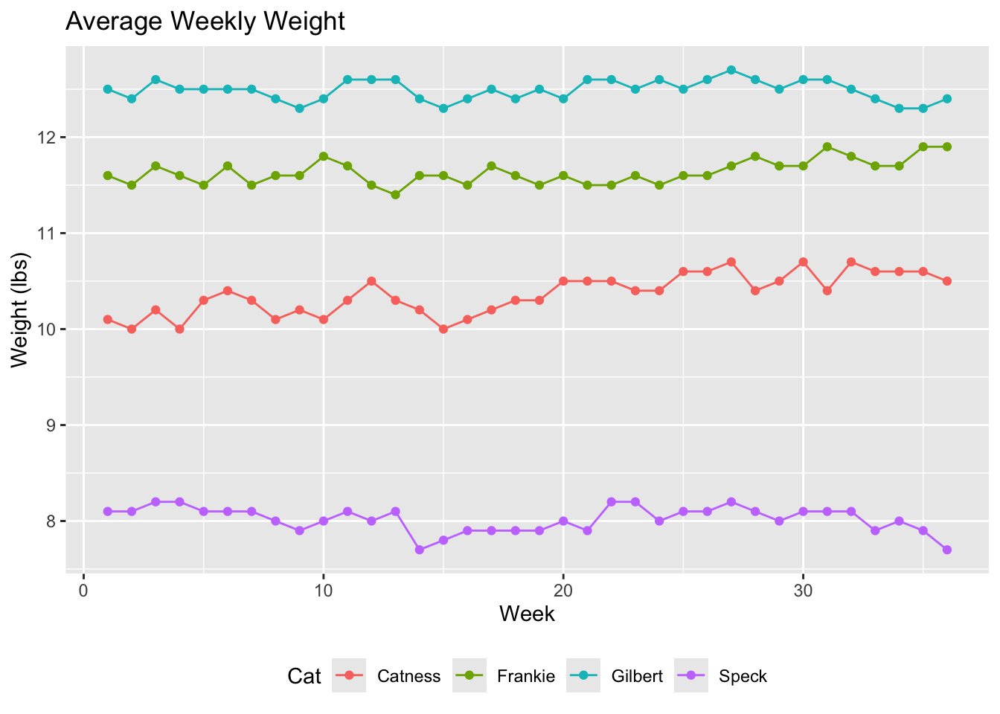
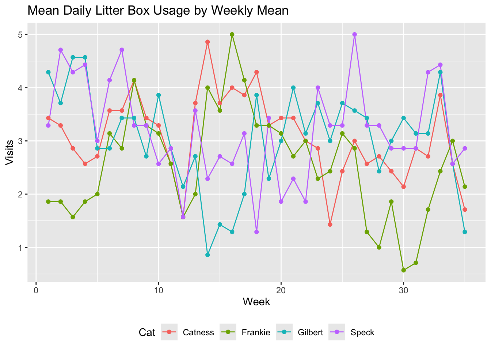
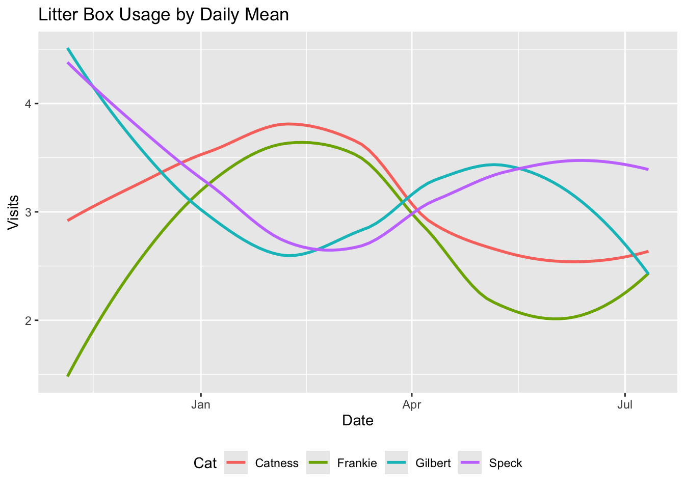
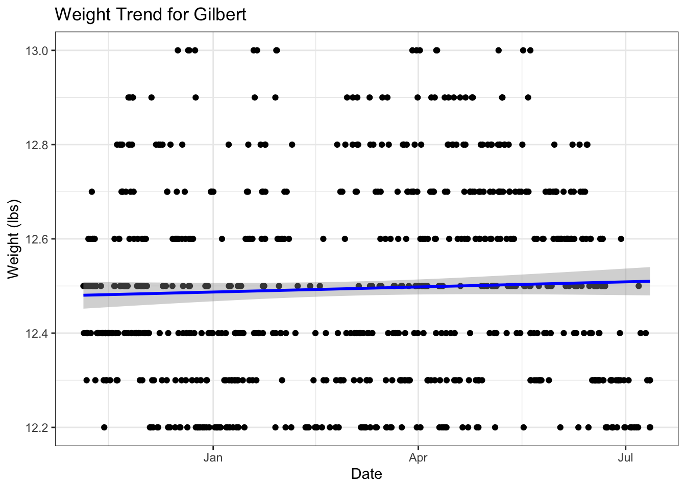
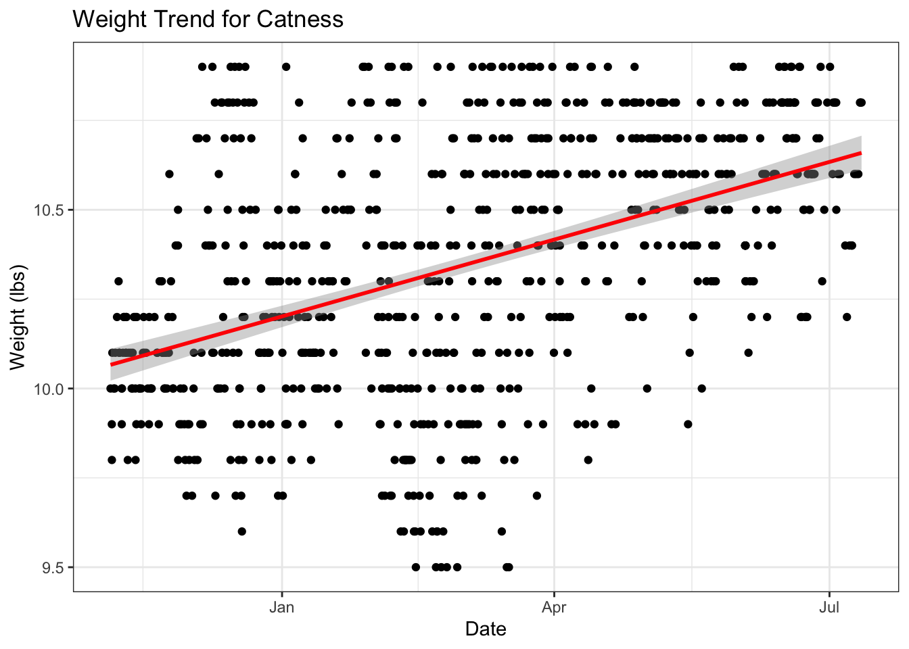
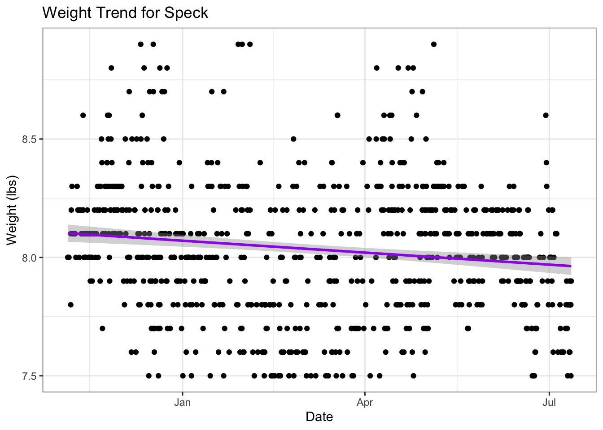
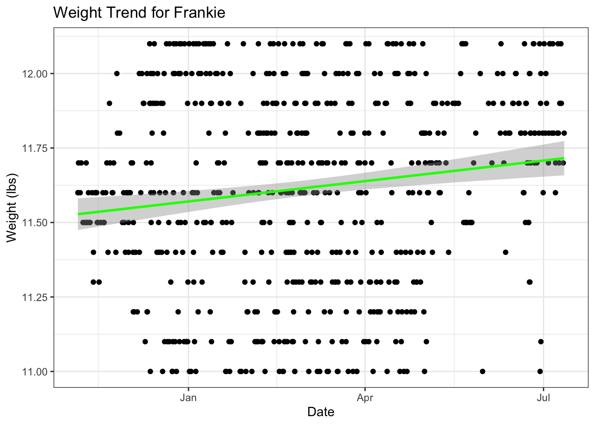
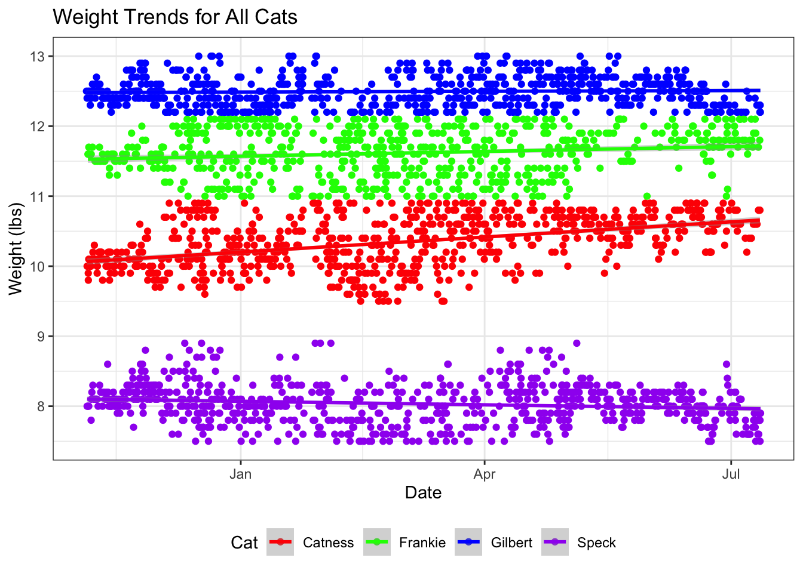

| Cat | Age | Sex | Health_Issues | Medication |
|---|---|---|---|---|
| Catness | 5 | Male | None | None |
| Frankie | 4 | Male | None | None |
| Gilbert | 12 | Male | Hyperthyroid, vomiting (chronic) | Methimazole, 3.75 mg |
| Speck | 8 | Female | tooth decay, diarrhea (chronic) | None |
Weight Trends and Litter Box Usage Patterns for the Morache Clowder
From November 5th, 2024
Author:
Mathias MH Morache | Software Developer & Cat Enthusiast
Overview
This report analyzes weight trends and litter box usage patterns for each of my four cats. The data was collected from a Litter-Robot 4 automatic litter box starting November 5th, 2024.


Methodology and Data Cleaning
The following considerations should be noted:
- Scale Precision: The precision and consistency of the Litter-Robot’s scale is unknown. However, I did not observe any glaringly inaccurate readings collected under normal circumstances.
- Cat Identification: Recordings are attributed to specific cats based on weight ranges, assuming each cat maintains a distinct weight profile. Gilbert and Frankie are the closest to overlapping in ranges, but this did not appear to happen. Although the Litter-Robot uses an “advanced cluster algorithm” to identify cats, this information is not exported.
- Outlier Removal: Extreme weight outliers, due to erroneously recorded events such as litter refilling and maintenance, have been removed from the dataset.
- Data Consolidation: Consecutive weight recordings within 15-minute intervals have been averaged to reduce noise and simplify analysis.
Cat Profiles
All of my cats share these characteristics:
- Indoor: They live exclusively indoors.
- Diet: Their diet consists primarily of wet food (Friskies 5.5 oz cans), typically consuming 4-6 cans per day, supplemented with dry treats (Temptations, Friskies), and bonito flakes (鰹節, katsuobushi, AKA skipjack tuna).
- Sterilization: All cats are spayed or neutered.
- Birthdate: With the exception of Gilbert, all birthdates are approximate, based on the best guess of the intial veterinarian who treated the cat after adoption.
Summary Statistics
Key statistics for each cat’s weight and litter box usage are summarized in the following tables and plots.
| Cat | Min | Max | Avg | Med | SD | Skew | Kurt |
|---|---|---|---|---|---|---|---|
| Catness | 9.6 | 10.9 | 10.2 | 10.1 | 0.34 | 0.39 | 2.31 |
| Frankie | 11.0 | 12.1 | 11.6 | 11.6 | 0.34 | -0.18 | 1.96 |
| Gilbert | 12.2 | 13.0 | 12.5 | 12.4 | 0.20 | 0.64 | 2.74 |
| Speck | 7.7 | 8.9 | 8.1 | 8.1 | 0.25 | 0.77 | 3.86 |
| Cat | Total_Visits | Weekly_Visits |
|---|---|---|
| Catness | 428 | 23.8 |
| Frankie | 367 | 20.4 |
| Gilbert | 377 | 20.9 |
| Speck | 361 | 20.1 |

Comparative Weekly Trends
The following plots visualize weekly changes in weight and litter box usage for each cat comparatively.



Weight Statistics
The following plots provide a more detailed look into weight trends for each individual cat. The standard error of the regression line is shaded in gray, representing a 95% confidence interval.




